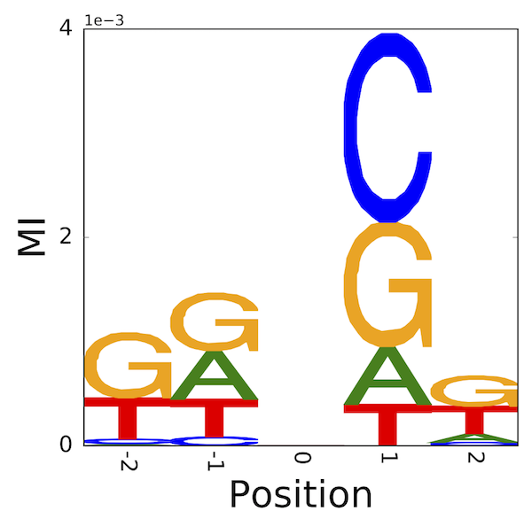
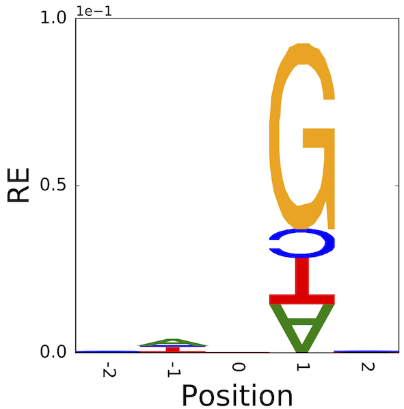

6.10. Measuring information using Shannon’s entropy#
We can measure the information content of “something” using a measurement called “entropy” (like a scale for information). The core unit is the “bit”, called a measure of surprise, which is the answer to a yes/no question.
Consider a state space containing only the letter A. We can never be “surprised” by the outcome of drawing a new letter from this space as it can only be of one type. So our entropy, in this case is 0. Add another letter and we have a chance to be “surprised”. So in general, as predictability goes up, entropy goes down.
As it turns out, entropy is a very fundamental quantity. You will see numerous expressions in statistics that relate to this. Given that the very purpose of genetical systems is to contain all the information sufficient to specify a living thing, application of statistical techniques built around the notion of “information” as a fundamental quantity seems quite natural.
There is a formal definition for entropy.
where \(H\) is Shannon entropy, \(p\) is a series of probabilities with \(n\) members and \(p_i\) the probability of state \(i\). In words, entropy is calculated as the sum of \(p_i\log_2(p_i)\). Further, in words the latter can be described as multiplying a probability by the log base 2 of itself.
Note
\(\sum_{i=0}^n\) means take the sum of the series starting at index 0 and ending at index n.
6.10.1. Measuring entropy for a simple alignment#
Here’s the simple alignment from the previous section.
TCAGA
TTCCA
TTCCA
TTTTC
TTTTC
Applying Shannon entropy to the sample alignment above gives:
Pos. 0 1 2 3 4
T C A G A
T T C C A
T T C C A
T T T T C
T T T T C
Ent. 0 0.72 1.52 1.52 0.97
In the previous section, the display of coloured letters describing sequences that bind to TBP is referred to as a sequence logo [SS90]. That representation is computed using position-wise entropy.
6.10.2. Information at a position#
where \(R_j\) is the information at position \(j\), \(n\) is the number of possible states (4 for DNA), \(\log_2(n)\) is the maximum possible entropy, and \(H_j\) is the Shannon entropy for position \(j\).
In this display, the letter height at a position is \(p_{j,l} R_j\).
6.10.3. Problems with sequence logo#
The background genomic distribution is assumed to be equally frequent nucleotides. Replacing \(\log_2(n)\) with the entropy of the genome can lead to \(R<0\).
6.10.4. Using relative entropy as an alternate#
Relative entropy (RE) is defined as
\(RE_j = \sum_{i=0}^n p_i \log_2(p_i / q_i)\)
where \(q_i\) is the background (e.g. genome) frequency of \(i\).
6.10.5. An illustration of the difference – identifying neighbouring base effects on mutation#
\(C\rightarrow T\) mutations in vertebrates typically arise from deamination of 5-methyl-cytosine. The latter modification is typically applied to 5’-CpG-3’. Hence, there is a striking association of 3’G and this point mutation direction.
If we sample sequences that share this mutation in common, aligning them centred on the mutated position, we can assess which statistic better captures the neighbouring base association. What we should see is that the 3’ position should have high information which arises from the base G.
|  |  |
{kind=link}
{kind=link}
These results originated from the honours research project of Ms Yicheng Zhu [ZNYH17].
6.11. Exercises#
Defining a short sequence for use below.
seq = "AGCCATTGCAAA"
Write a function that converts
seqinto counts of nucleotides. (Use the standard librarycollections.Counterclass.)Write a function that takes a dict like object (e.g. the counter you’ve just created from (1)) of counts and converts it to numpy array whose length is 4.
You should consider it critical that your function always returns arrays where the counts for each nucleotide are always in the same position. For instance, if you define the state order as T, C, A, G then the counts for T are always at index 0 – even if a T was not observed.
Expected output
If you select that nucleotide ordering, your function should return the nfollowing given the nucleotide counts
dictfromseqas inputarray([2, 3, 5, 2])
Write a function that converts these counts into a frequencies.
Converting the mathematical expression for entropy into a Python function. Apply it to the results from applying the functions you wrote for (1-3) to
seq(for taking log2 see the math functions sidebar).Apply the functions you’ve written to the following randomly generated sequence.
'CCGGGGCCGAAAGAGAAAAGAGGGCAGAGAAAACAAACGAAGCGACGGGC'
What do you observe? Why is it happening?
Modify your function for answer (3) so, if there are zero values, it adds a pseudocount to all of the array elements before converting to frequencies. Set a default pseudocount of 0.5.
Make sure your frequencies sum to 1.
Is there another approach to solving this issue?
Citations
T D Schneider and R M Stephens. Sequence logos: a new way to display consensus sequences. Nucleic Acids Res, 18:6097–100, 1990. doi:10.1093/nar/18.20.6097.
Yicheng Zhu, Teresa Neeman, Von Bing Yap, and Gavin A Huttley. Statistical methods for identifying sequence motifs affecting point mutations. Genetics, 205:843–856, 2017. doi:10.1534/genetics.116.195677.